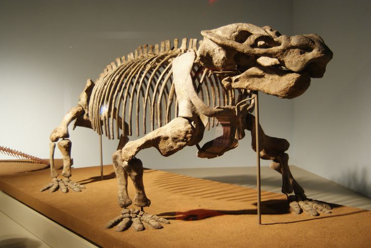

How Did Dinosaurs Evolve?

Dinosaurs didn't spring suddenly into existence two hundred million years ago, huge,
toothy, and hungry for grub. Like all living things, they evolved, slowly and gradually,
according to the rules of Darwinian selection and adaptation, from previously existing
creatures—in this case, a family of primitive reptiles known as archosaurs ("ruling lizards").
On the face of it, archosaurs weren't all that different from the dinosaurs that succeeded them. However, these Triassic reptiles were much smaller than later dinosaurs, and they possessed certain characteristic features that set them apart from their more famous descendants (most notably, the lack of a "locked-in" posture for their front and hind limbs). Paleontologists may even have identified the single genus of archosaur from which all dinosaurs evolved: Lagosuchus (Greek for "rabbit crocodile"), a quick, tiny reptile that scurried across the forests of early Triassic South America, and that sometimes goes by the name Marasuchus.